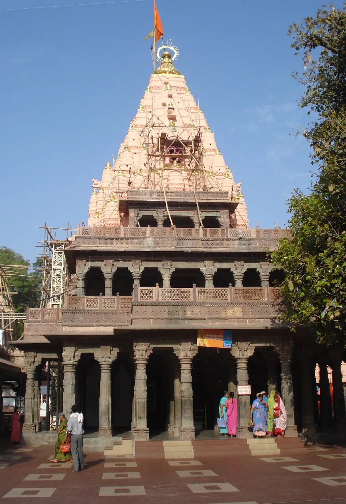
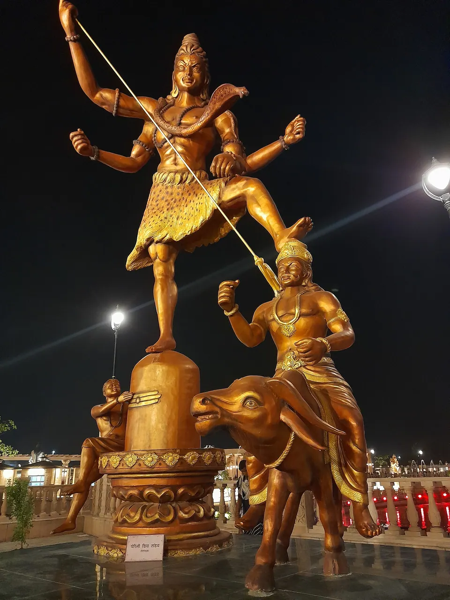
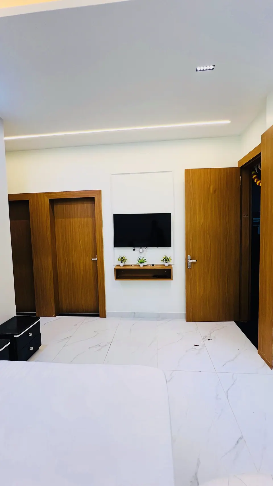

What to Carry for Mahakal Darshan (and What to Leave Behind)

Short answer: carry very little. For Mahakal darshan, bring modest clothes, slip-on footwear, a small bag, cash for prasad and a photo ID. Leave your mobile phone, smartwatch, camera and leather items at your stay, because phones and cameras are not allowed inside the temple premises.
We have sent many pilgrim families to the temple from our doorstep, and the ones who enjoy it most are the ones who walk in light. Elders do not have to stand in a cloakroom queue, children are not weighed down, and everyone's mind stays on the darshan. Here is the list we share with our own guests, with the sources for each rule.
The one rule everyone asks about: mobile phones
MP Tourism states that mobiles and cameras are not allowed inside the Mahakaleshwar temple premises and that gadgets must be deposited in the locker room (MP Tourism). The ban on carrying phones inside the premises came into force on 20 December 2022, decided by the temple management committee (Free Press Journal).
The same newspaper reported cloakrooms at the Mansarovar entrance, in front of the administrative office and at gate number 4, and a devotee from Bhopal fined ₹201 on the first day for bringing a phone (Free Press Journal). Counters can move, so follow the signs and the staff on the day.
Our simple advice
- Leave the phone, smartwatch and earphones at your villa. This saves the queue at the cloakroom.
- If someone in the family must keep a phone, for example to be reachable for a child, let one person use the cloakroom and agree a meeting point outside.
- Photograph the temple from outside the premises or in the open corridor instead (see below).

What to carry: a short checklist
Clothes and footwear
Dress modestly, in clothes that cover shoulders and knees; one temple guide lists this as expected for general darshan (ujjaindarshan.com), and Outlook Traveller advises traditional attire or a scarf (Outlook Traveller). Cotton is comfortable in the queue. In winter, carry a shawl you can fold into your bag, since mornings in Ujjain are cool; see our winter guide.
Wear slip-on footwear that is easy to take off and leave. The sanctum has its own rules: MP Tourism says men wear a dhoti and women a saree to enter the inner sanctum for Bhasma Aarti. Our dress code guide covers this in full.
Documents and money
- Photo ID for each person, and your Bhasma Aarti pass if you have booked one. We found no official ID rule for ordinary darshan, but a printed or saved pass and ID are sensible for any booked entry. Our Bhasma Aarti booking guide explains the steps.
- Small cash for prasad, flowers and offerings, kept in a pocket or a cloth pouch.
- A printed copy of any pass, because your phone will be in the cloakroom or at home.
For children and elders
- Water to drink on the walk to the gate, finished before you enter.
- Any essential medicine, in a small pouch, with the prescription for elders.
- A light snack for children to eat before you enter the queue, not inside.
- A walking stick or a family member who stays beside the elders throughout.
What to leave behind
- Mobile phones, cameras and smartwatches: not allowed inside the premises, as above.
- Leather items such as belts and wallets: one guide says they must be deposited before entry (ujjaindarshan.com). This is from a private guide, not the temple, so we suggest a cloth or fabric pouch and a fabric belt to be safe.
- Big bags and backpacks: Outlook Traveller notes that visitors pass security checks, including bag inspections. A large bag only slows you down.
- Jewellery and valuables: darshan lines are tightly packed. Wear only what you need and leave the rest packed away at your stay.

Photos, Mahakal Lok and the open corridor
You will want a family picture, and that is understandable. The guide on ujjaindarshan.com says photography is allowed in the outdoor Mahakal Lok corridor but strictly prohibited inside the main temple and sanctum. The Free Press Journal reported in 2022 that visitors could take mobiles to Mahakal Lok, though the wording was not fully clear, so ask the staff before you pull out a phone.
A good plan is to take your family photos in the corridor among the sandstone sculptures, then go for darshan without a phone. Our Mahakal Lok visit guide has the walk, the timing and the best light.

Queues, passes and timing
One guide lists the temple as open from 4:00 AM, with general entry through the Mahakal Lok corridor, and a paid fast-track (Sheeghra Darshan) at ₹250 per person (ujjaindarshan.com). Fees and timings change, so confirm them on the temple's official site.
For Bhasma Aarti, MP Tourism says prior booking is required and recommends booking about a month in advance on the official site. Winter and festival periods shift aarti timings, so see our winter aarti timings before you plan your morning. Our travel page explains how to move around the city.
A calm morning, step by step
- The night before, lay out clothes, ID, printed pass and a few small notes of cash.
- Leave phones, watches and leather items in the villa.
- Eat a light snack and carry a shawl in winter.
- Reach the gate early, follow the staff and the signs, and keep elders and children between two adults.
Where to stay near Mahakaleshwar for a light-handed darshan
All five AP Villas are within 2 km of Mahakaleshwar Jyotirlinga, about 6 minutes by car or 12 minutes on foot, and in-house guests get a complimentary Mahakal shuttle (up to 5 guests per trip). Staying this close means you can leave phones and valuables behind and come back to rest.



Rudrangan Suites: pack calmly, leave on time
Rudrangan Suites opened in 2026 with designer finishes, premium linens and garden seating. It has 3 bedrooms and sleeps 6, from ₹5,200 per night. There is a lift, the stay is wheelchair friendly and pets are welcome. The kitchen has an induction cooktop, microwave and mini fridge, so you can prepare a light snack before an early darshan. Check-in is 10:30 AM and check-out 9:30 AM; a later check-out can be arranged on request, subject to availability.
For larger groups
- Divinestay: 3 bedrooms, sleeps 8, from ₹5,500 per night.
- Om Shanti Stay: 2 bedrooms, sleeps 6, from ₹4,500 per night.
Our caretaker explains the Bhasma Aarti booking process on your arrival evening, and the shuttle drops you at the temple gate by 3:30 AM for the 4 AM aarti. The help is complimentary; the temple's own permit is booked by you. See all five on our villas page, or ask us anything on the contact page.
Frequently asked questions
Can I take my mobile phone inside Mahakaleshwar Temple?
No. MP Tourism says mobiles and cameras are not allowed inside the temple premises and gadgets must be left in the locker room. Free Press Journal reported that the ban began on 20 December 2022 and that cloakrooms were set up at the entrances. Leave your phone at your stay if you can.
Can I carry a bag into the temple?
Expect a security check. Outlook Traveller says visitors pass bag inspections before entering. Some guides say bags and leather items are not allowed inside, though we could not confirm this on an official page. Carry a small cloth pouch with only essentials and ask the temple staff at the gate.
What clothes should I wear for general Mahakal darshan?
Dress modestly. A guide on ujjaindarshan.com says clothes covering shoulders and knees are expected for general darshan, and Outlook Traveller advises traditional attire or a scarf. For the sanctum during Bhasma Aarti, MP Tourism says men wear a dhoti and women a saree. See our dress code guide for detail.
Is a government ID needed for Mahakal darshan?
We found no official page that sets an ID rule for ordinary darshan, so we cannot promise one either way. For Bhasma Aarti, the pass is booked online in advance, and we suggest carrying a photo ID for every person on the booking, as a precaution. Check the official site before you travel.
Can I take photos at Mahakal Lok?
The ujjaindarshan.com guide says photography is allowed in the open Mahakal Lok corridor, while phones and cameras are strictly prohibited in the main temple and sanctum. The Free Press Journal also reported phones being usable in the corridor. Rules can change, so confirm at the gate on the day.
Sources
- MP Tourism: Bhasm Aarti at Mahakaleshwar, Ujjain
- Free Press Journal: Devotees to be prohibited from carrying mobile phones (December 2022)
- Free Press Journal: Ban on mobile phones in Mahakal temple premises comes into force (December 2022)
- ujjaindarshan.com: Shri Mahakaleshwar
- Outlook Traveller: Things to know before visiting Mahakaleshwar
- Wikimedia Commons: Mahakal Temple Ujjain
Timings, prices and dates change, especially on festival days. Please verify before you travel with the official temple or government site.
— Apoorv, Founder, AP Villas & Resorts